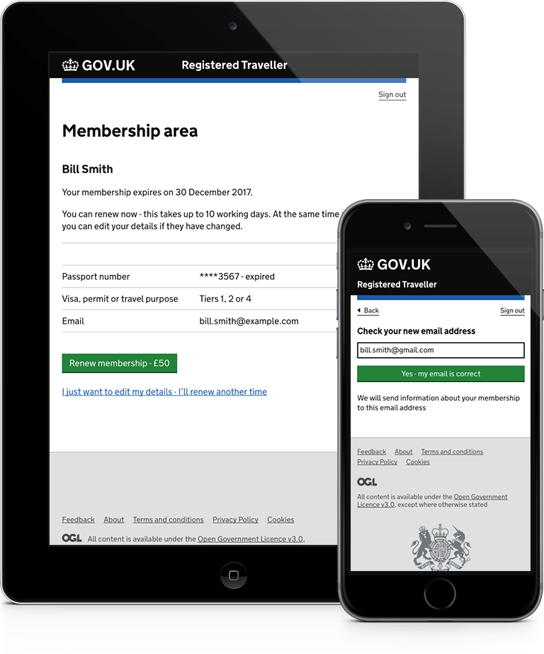
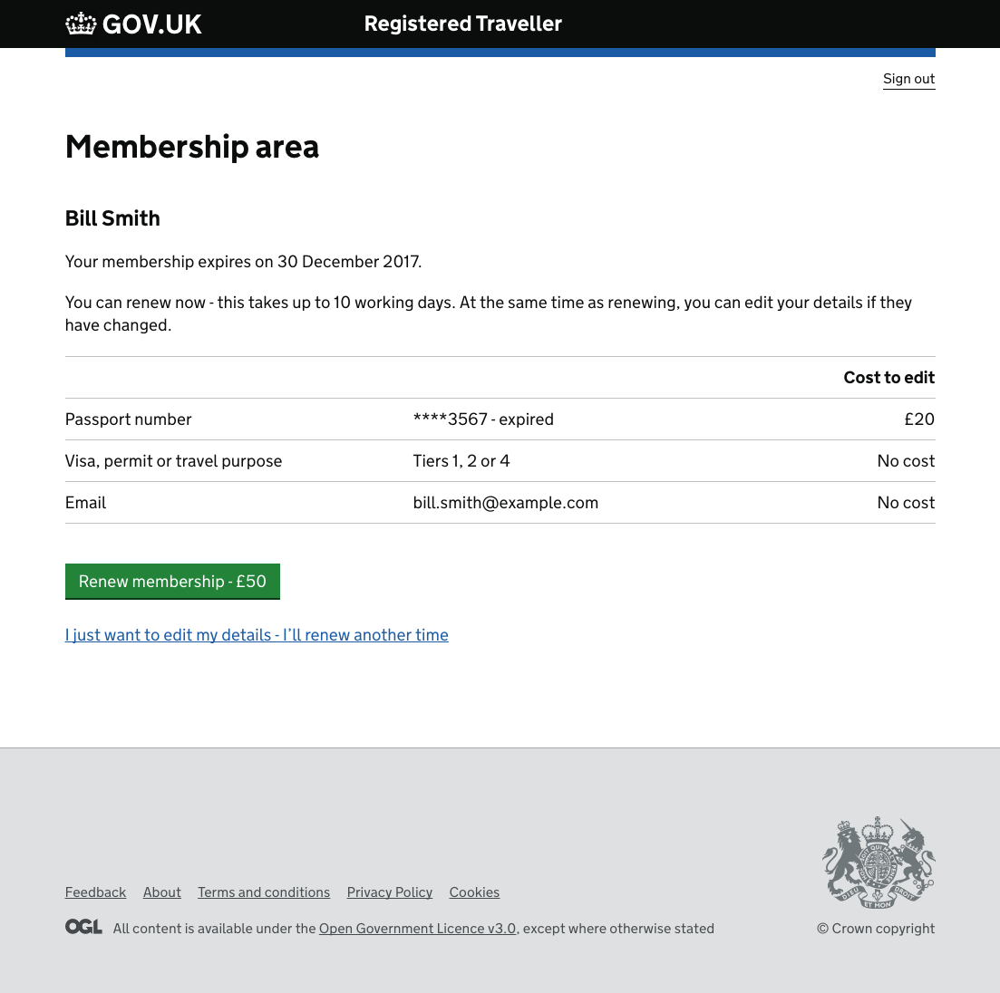
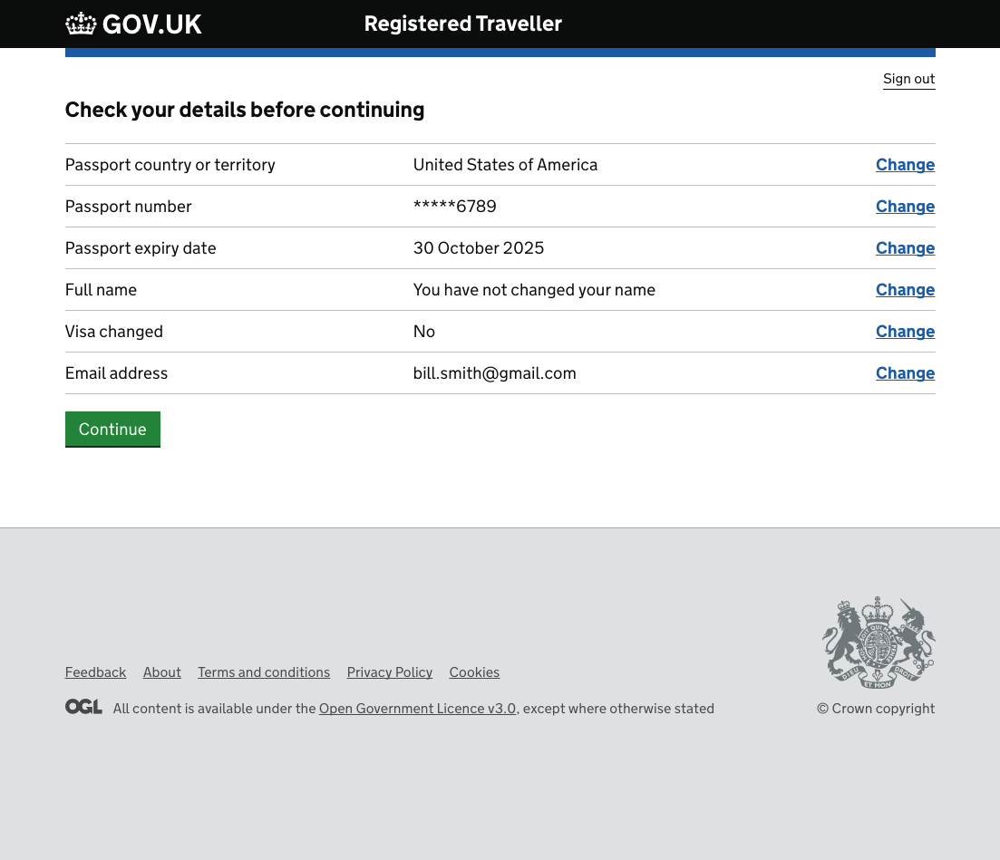

Registered Traveller Service
Border Force
- The GOV.UK Registered Traveller Service (RT) service is...
- Used the GOV.UK prototyping kit to develop many RT prototypes for user research and usability testing in the GDS lab and at airports
- Converting the service to one thing per page...easier to use
- Designed and prototyped a user self service application so that customers can update their own details cutting down Caseworkers workload

